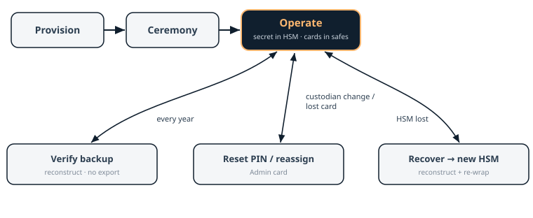

Custody Governance & Checklists
This page turns the system into an operating procedure for an organisation: who does what, and the recurring controls that keep the backup healthy over its lifetime. The checklists are written to be printed and signed (see Printable Checklist for a one-page version).
Roles
Custody administrator — runs the ceremony, holds the Admin card, owns this procedure and the custody log.
Custodians — each holds one storage card (and its PIN), in a separate secure location.
Quorum — any
kcustodians can, together, reconstruct the secret.
Lifecycle at a glance


Fig. 8 The custody lifecycle: once Operate is reached, the recurring events (annual verification, custodian/card changes, recovery) each return to Operate.
Provision the cards into a matched set (factory step).
Ceremony — generate and split the secret; distribute the storage cards. (The Ceremony)
Operate — the live secret is in the HSM; the cards are the offline backup, sealed in safes.
Verify periodically — confirm the shares still reconstruct, without exposing the secret. (Backup Test)
Handle changes — personnel changes, lost/damaged cards.
Recover if ever needed. (Recovery)
Cadence (recommended)
When |
Action |
|---|---|
At setup |
Ceremony + record the seed checksum and the custody log. |
Every 12 months |
Backup test (verify the shares reconstruct). A test needs a quorum of
|
Whenever a custodian leaves |
Recover their card, reset its PIN (Admin card) and reassign — or re-ceremony if your policy requires fresh shares. |
On any card loss/damage |
Assess quorum impact; re-ceremony if you risk dropping below |
After any recovery |
Check the export counters; review who accessed what. |
Checklist — initial ceremony
[ ] Cards provisioned as a matched set; PIN level chosen (A/B/C)
[ ] Trusted, offline machine; multiple officers present (four-eyes)
[ ] Real HSM RSA public key provided (--rsa-key-file), not a test key
[ ] Factory blessing bundle for this set present (*.bundle.json)
[ ] Ran: shamir-cli workflow full-ceremony -n N -k K -s SIZE \
--blessings-bundle BUNDLE.json --rsa-key-file ...
[ ] Each storage card's share number written as it is loaded (#1, #2, ...)
[ ] Card backs filled in (codes only, never full names, no signature):
all = Bundle + code + ceremony date (Notes); storage = also share number
[ ] Total (n) and threshold (k) in the custody log ONLY, never on the cards
(full names and signatures also live only in the log)
[ ] Backup test passed at the end of the ceremony
[ ] Wrapped seed imported into the HSM, then the file destroyed
[ ] Custody log recorded: seed checksum, k/n, seed size/type, per-card holder
[ ] Storage cards sealed in separate secure locations
[ ] Orchestrator card reset; Admin card stored separately under its own control
Checklist — periodic verification (every 12 months)
[ ] Collect the cards: all n if you can gather them, else k (rotate which
k each year so every card is eventually tested)
[ ] Ran: shamir-cli workflow backup-test -k K
[ ] RESULT = PASS (seed reconstructs; it is NEVER exported in this mode)
[ ] Read each card's export counter; matches the custody log
[ ] Cards returned to their secure locations; log updated & signed
Checklist — custodian offboarding (someone leaves)
[ ] Retrieve the departing custodian's storage card
[ ] Reset its PIN with the Admin card (level C) and set a new PIN, OR
re-provision the card if its PIN is unknown/locked
[ ] Reassign the card to the new custodian; update the custody log
[ ] Run a backup test to confirm the set still reconstructs
[ ] If policy requires fresh shares, run a new ceremony and retire the old set
Checklist — lost / damaged / locked card
[ ] Note which share index is affected; update the custody log
[ ] Forgotten/locked PIN, card in hand -> reset PIN with the Admin card (level C)
[ ] Card lost or destroyed -> count remaining usable cards
[ ] still >= k usable -> recovery is unaffected; plan a re-ceremony to
restore full redundancy
[ ] < k usable -> the secret can no longer be reconstructed from
the cards; recover from the HSM / re-establish the backup immediately
See also
Cards — the cards and the PIN security levels (A/B/C).
Backup Test — the periodic health check.
Recovery — restoring the seed from
kcards.Printable Checklist — one-page printable version.